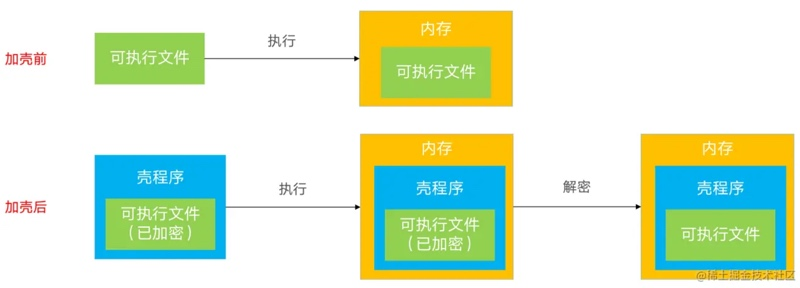
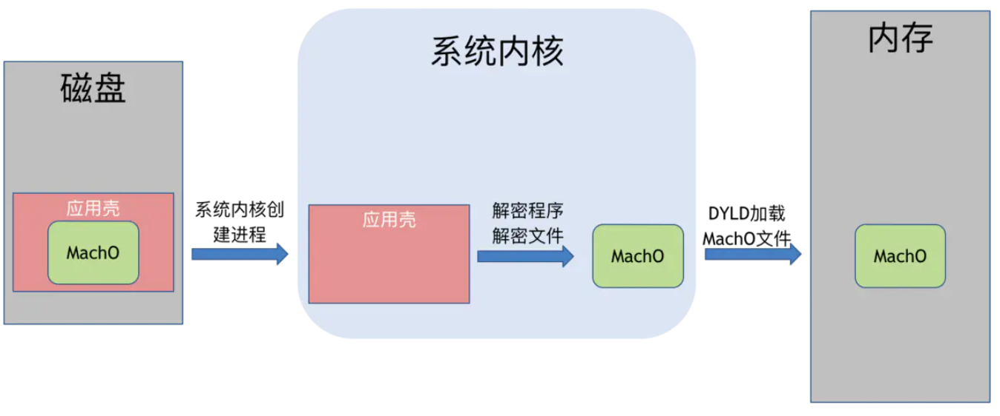

砸壳ipa概览
什么是壳？
壳，在安全和逆向领域，泛指：用技术手段，给原程序额外加上一层保护程序
什么是iOS的app的壳？
iOS中的app，发布渠道一般都是App Store。
从App Store下载的APP全都是经过苹果加密过的ipa包。
而Apple会为了安全，给app加密(使用Apple ID相关的对称加密算法)，这个过程俗称为：加壳，就像给app外部上加了一层壳

而加密后的ipa包，是无法继续后续的逆向过程的
- 后续的典型的逆向过程是
- 用
IDA/Hopper等去反编译 - 用
class-dump等去导出头文件- 说明
class-dump直接去导出，未砸壳的，App Store上的二进制的话- 只能导出
CDStructures.h这个空的头文件，无法得到想要的各种类的头文件
- 只能导出
- 说明
- 对砸壳后的ipa，去用
MonkeyDev动态调试 - 等等
- 用
什么是iOS的砸壳 + 如何砸壳？
想要破解分析iOS的app之前，需要把这层壳砸破=砸壳=脱壳。
- 砸壳有两种机制
- 静态砸壳：使用已知的解密方法对软件进行解密叫静态砸壳，静态砸壳难度大，需要知道其软件的加密算法才能对其解密
- 现在没有这种工具
- 动态砸壳
- 现在绝大多数工具都是用此方式
- 静态砸壳：使用已知的解密方法对软件进行解密叫静态砸壳，静态砸壳难度大，需要知道其软件的加密算法才能对其解密
如何（动态）砸壳呢？就要先了解app运行机制：app程序运行起来都会直接在内存解密出原始代码

可以在越狱的设备里面通过内存dump方式提取解密后的程序，这种解密过程，也就是给app去壳的过程，又称为砸壳=破壳
- 额外说明
- 解密之后还需要手动恢复
Mach-O头信息才能运行 - 由于高版本非完美越狱里面，都没有删掉签名验证
- 所以直接运行都会出现
killed 9- 需要手动签名之后才能使用
- 所以直接运行都会出现
- 解密之后还需要手动恢复
砸壳的前提
- 确保iOS设备（iPhone等）已越狱
- 详见：